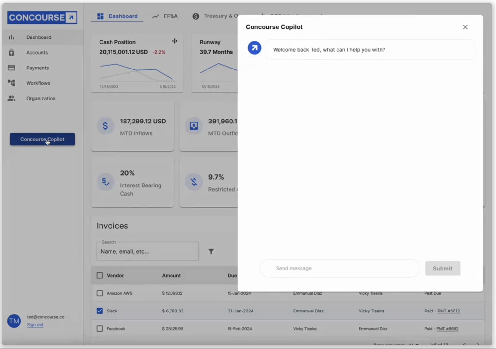

1
A persistent conversation, not a search box
A conversation panel keeps context, so users ask follow-ups without repeating themselves: from “How much did we spend on marketing last month?” to “Show me the trend.”
TradeoffThe panel takes space next to the dashboard. In exchange, analysis becomes a dialogue instead of a series of disconnected queries.
